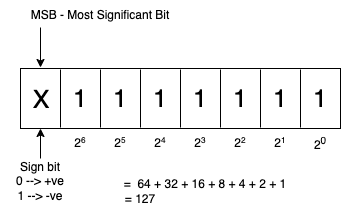

Data Types
In Java, every variable expression has some type. Every data type is clearly defined.
Compiler should check every assignment for type compatibility.
Because of the above reason, we can conclude Java language is a strongly typed programming language.
Java is not considered as a pure object-oriented programming language because several OOPS features are not satisfied by Java (like operator overloading, multiple inheritance, etc.). Moreover, we depend on primitive datatypes which are non objects.
Primitive Data types (8 types)
-
Non-Numeric data type (2 types)
- char
- boolean
-
Numeric data types (6 types)
- Integral data types
- byte
- short
- int
- long
- Floating point data types
- float
- double
- Integral data types
Except boolean and char, remaining data types are considered as signed data types because we can represent both positive and negative numbers.
byte
Size: 1 byte (8 bits)
MAX_VALUE: 127
MIN_VALUE: -128
Range: -128 to 127

The most significant bit act as signed bit. 0 indicate positive number and 1 indicate negative number.
Positive number will be represented directly in memory, whereas negative number will be represented in two's compliment form.
byte is the best choice, if we want to handle data in terms of streams, either from the file or from network (a file or network supported form is byte).
short
This is rarely used datatype in Java.
Size: 2 bytes (16 bits)
Range: -215 to 215 -1 [-32768 to 32767]
//Example:
short s = 32767; //valid
short s = 32768; //CE: Possible loss of precision, found: int, required: short
short datatype is the best suitable for 16-bit processor like 8085, but these processors are completely outdated and hence the corresponding short datatype is also outdated datatype.
int
This is the most commonly used datatype in Java.
Size: 4 bytes (32 bits)
Range: -231 to 231 - 1 [-2147483648 to 2147483647]
long
Sometimes integer may not enough to hold a large value then we can use long datatype.
Size: 8 bytes (64 bits)
Range: -263 to 263 - 1
eg.
The amount of distance traveled by light in 100 days, to hold this value, int may not enough.
long l = 126000000000;
The number of characters present in a big file may exceed int range, hence the return type of length method is long but not int.
long l = file.length();
Note: All above datatypes (byte, short, int, long) meant for representing integral values. If we want to represent floating point values, then we should use floating point datatype.
float
If we want 5 to 6 decimal place of accuracy then we should use float. It follows single precision.
Size: 4 bytes (32 bits)
Range: -3.4e38 to 3.4e38
double
If we want 14 to 15 decimal place of accuracy then we should use double datatype. It follows double precision
Size: 8 bytes (64 bits)
Range: -1.7e308 to 1.7e308
boolean
Size: Not applicable [virtual machine dependent]
Range: Not applicable [but allowed values are true and false]
char
Old languages (like c/c++) are ASCII based, and the number of allowed ASCII characters is less than or equal to 256. To represent these 256 characters, 8 bits(1 byte) is enough, hence the size of char in old language is one byte.
But Java is Unicode-based,
and the number of different Unicode characters is greater than 256 and less than or equal to 65,536.
To represent these many characters, 8 bits may not be enough.
So it uses 16 bits, hence the size of char in Java is two bytes.
Size: 2 bytes (16 bits)
Range: 0 to 65,536
Summary of Java primitive datatypes
| Data type | Size | Range | Wrapper class | Default value |
|---|---|---|---|---|
| byte | 1 byte | -27 to 27 - 1 | Byte | 0 |
| short | 2 bytes | -215 to 215 - 1 | Short | 0 |
| int | 4 bytes | -231 to 231 - 1 | Integer | 0 |
| long | 8 bytes | -263 to 263 - 1 | Long | 0 |
| float | 4 bytes | -3.4e38 to 3.4e38 | Float | 0 |
| double | 8 bytes | -1.7e308 to 1.7e308 | Double | 0 |
| char | 2 bytes | 0 to 65,536 | Character | 0 [represents space character] |
| boolean | NA | NA [allowed values true/false] | Boolean | false |
Note: null is default value for object reference, and we can't apply for primitive.
If we try to use for primitive, we'll get compile time error.